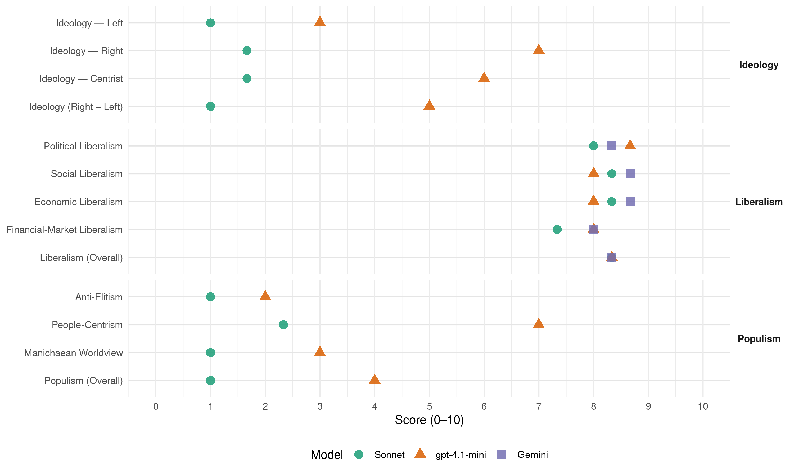

H (Norway, 2017)
manifesto_id 12620_201709
Get full text: This site shows derived annotations and short verbatim quotes only. The full manifesto text is © Manifesto Project / WZB — obtain it via manifesto-project.wzb.eu using the manifesto_id above.
Headline scores
| Dimension | Sonnet | gpt-4.1-mini | Gemini |
|---|---|---|---|
| Populism (Overall) | 1.0 | 4.0 | – |
| Anti-Elitism | 1.0 | 2.0 | – |
| People-Centrism | 2.3 | 7.0 | – |
| Manichaean Worldview | 1.0 | 3.0 | – |
| Ideology (Right − Left) | 1.0 | 5.0 | – |
| Liberalism (Overall) | 8.3 | 8.3 | 8.3 |
| Political Liberalism | 8.0 | 8.7 | 8.3 |
| Social Liberalism | 8.3 | 8.0 | 8.7 |
| Economic Liberalism | 8.3 | 8.0 | 8.7 |
| Financial-Market Liberalism | 7.3 | 8.0 | 8.0 |
Evidence per dimension
Economic Liberalism
Gemini · score 9.0 · verified · chunk 1
“Frie markeder er viktig for å sikre”
erstatte tapte arbeidsplasser i privat sektor med nye, lønnsomme arbeidsplasser i privat sektor. Frie markeder er viktig for å sikre maktspredning i samfunnet
Gemini · score 8.0 · verified · chunk 2
“velfungerende konkurranse i omsetningen av”
mulighetene til kapitaltilgang. Legge bedre til rette for en velfungerende konkurranse i omsetningen av norske jordbruksprodukter. Gjøre jordbruket mindre
Gemini · score 9.0 · verified · chunk 3
“bruke markedet i miljøets tjeneste”
Høyre vil bruke markedet i miljøets tjeneste, følge prinsippet om at forurenser betaler
gpt-4.1-mini · score 9.0 · verified · chunk 1
“Frie markeder er viktig for å sikre maktspredning i samfunnet”
Sikre og skape arbeidsplasser Det viktigste målet for Høyres økonomiske politikk er å ivareta og skape flere lønnsomme jobber i privat sektor for å sikre vår felles velferd. Vår felles arbeidsinnsats er grunnlaget for både privat og offentlig velferd. Å ha en jobb sikrer inntekt og velferd for den enkelte, familiene og samfunnet. Å skape flere nye jobber er derfor det viktigste målet for den økonomiske politikken. Det skal lønne seg å jobbe. Verdier må skapes før de kan brukes. Veksten i økonomien må derfor være sterk i privat sektor. De som satser og skaper muligheter for seg selv og andre gjennom kreativitet og innsatsvilje, må oppmuntres, og de må få høste resultatene av sitt arbeid. Det å ha en jobb å gå til er den sikreste vei for å unngå fattigdom. Derfor vil Høyre jobbe for at de som kan delta i arbeidslivet, skal ha mulighet til det. Vi må erstatte tapte arbeidsplasser i privat sektor med nye, lønnsomme arbeidsplasser i privat sektor. Frie markeder er viktig for å sikre maktspredning i samfunnet, og bidrar til innovasjon i både offentlig og privat sektor. En velfungerende markedsøkonomi forutsetter klare regler mot misbruk av markeds- og myndighetsmakt.
gpt-4.1-mini · score 7.0 · verified · chunk 2
“Markedsbaserte løsninger skal fortsatt ligge til grunn for den videre utbyggingen”
En god digital infrastruktur er avgjørende for å sikre bosetting over hele landet, et konkurransedyktig næringsliv og en god tilpasning til samfunnsutviklingen. Markedsbaserte løsninger skal fortsatt ligge til grunn for den videre utbyggingen. Det offentlige skal bidra med finansering der markedet ikke strekker til for å nå alle.
gpt-4.1-mini · score 8.0 · verified · chunk 3
“Høyre vil føre en politikk som bidrar til innovasjon og effektivisering av offentlige tjenester”
Offentlig sektor står for en betydelig andel av tjenesteproduksjonen og sysselsettingen i Norge. Høyre vil føre en politikk som bidrar til innovasjon og effektivisering av offentlige tjenester, og vil la private og ideelle aktører konkurrere om tjenesteproduksjonen for å bidra til innovasjon i tilbudet, bedre tjenester, flere gründere, større mangfold og valgfrihet for brukerne.
Sonnet · score 9.0 · verified · chunk 1
“Frie markeder er viktig for å sikre maktspredning”
Frie markeder er viktig for å sikre maktspredning i samfunnet, og bidrar til innovasjon i både offentlig og privat sektor.
Sonnet · score 8.0 · verified · chunk 2
“Markedsbaserte løsninger skal fortsatt ligge til grunn”
Markedsbaserte løsninger skal fortsatt ligge til grunn for den videre utbyggingen. Det offentlige skal bidra med finansering der markedet ikke strekker til for å nå alle.
Sonnet · score 8.0 · verified · chunk 3
“private og ideelle aktører konkurrere om tjenesteproduksjonen”
vil la private og ideelle aktører konkurrere om tjenesteproduksjonen for å bidra til innovasjon i tilbudet, bedre tjenester
Financial-Market Liberalism
Gemini · score 8.0 · verified · chunk 2
“bedre mulighetene til kapitaltilgang”
virksomheten i landbrukssektoren, for å redusere risikoen og for å bedre mulighetene til kapitaltilgang. Legge bedre til rette for en velfungerende
gpt-4.1-mini · score 8.0 · verified · chunk 1
“forvalte Statens pensjonsfond utland i et generasjonsperspektiv”
Trygg økonomisk styring Høyre vil føre en ansvarlig økonomisk politikk som sikrer god konkurransekraft, høy sysselsetting og bærekraftig vekst. Høyre vil føre en skattepolitikk som gir et bredest mulig skattegrunnlag. Alle med skatteevne skal betale skatt. Skatteinntektene er avgjørende for å finansiere vår felles velferd. Skatte- og avgiftssystemet må legges til rette for vekst og verdiskaping. En effektiv og velfungerende offentlig forvaltning og god infrastruktur er viktig for samfunnet og norsk økonomi, og er et konkurransefortrinn for norsk næringsliv. Høyre vil ha en bedre rolledeling mellom offentlig og privat sektor, der det offentlige i større grad vet å spille på og dra nytte av innovasjonsevnen i privat sektor. Høyre vil forvalte Statens pensjonsfond utland i et generasjonsperspektiv. Det innebærer at uttakene fra fondet må sees i sammenheng med forventet avkastning over tid og gradvis fases inn i norsk økonomi, og at uttak må benyttes til å investere for fremtiden.
Sonnet · score 8.0 · verified · chunk 1
“stimulere tilgangen på kvalifisert kapital”
Høyre mener det skal være enkelt å starte opp og drive bedrifter, og vil bidra til det gjennom å stimulere tilgangen på kvalifisert kapital og kompetanse
Sonnet · score 7.0 · verified · chunk 2
“bedre mulighetene til kapitaltilgang”
Myke opp reglene for å kunne bruke aksjeselskap som selskapsform for deler av virksomheten i landbrukssektoren, for å redusere risikoen og for å bedre mulighetene til kapitaltilgang.
Sonnet · score 7.0 · verified · chunk 3
“Styrke konkurransen og mangfoldet på sokkelen”
Styrke konkurransen og mangfoldet på sokkelen for å sikre en kostnadseffektiv, miljømessig og teknologisk positiv utvikling
Political Liberalism
Gemini · score 9.0 · verified · chunk 1
“rettsstaten og folkestyret, for å fremme”
konservativ fremskrittspolitikk, bygget på det kristne kulturgrunnlag, rettsstaten og folkestyret, for å fremme personlig frihet og sosialt ansvar
Gemini · score 8.0 · verified · chunk 2
“investering i stabilitet, demokrati og utvikling”
forutsetning for å avskaffe fattigdom og en investering i stabilitet, demokrati og utvikling. Derfor er det å satse på kunnskap
Gemini · score 8.0 · verified · chunk 3
“forutsetning for vår deltagelse i demokratiet”
God språkrøkt er derfor ikke bare en kulturpolitisk målsetning, men også en forutsetning for vår deltagelse i demokratiet. Høyre vil:
gpt-4.1-mini · score 9.0 · verified · chunk 1
“ytringsfrihet, likebehandling og demokrati”
Trygghet i hverdagen Høyre vil sikre den grunnleggende tryggheten gjennom et sterkt forsvar. Som en del av utenrikspolitikken ønsker Høyre å verne om europeiske grunnverdier, som ytringsfrihet, likebehandling og demokrati. Vi vil ha et synlig og tilstedeværende politi, og vi vil føre en streng og forutsigbar asylpolitikk.
gpt-4.1-mini · score 8.0 · verified · chunk 2
“Norge skal fortsatt være et internasjonalt foregangsland når det gjelder likestilling”
Alle skal ha like muligheter og rettigheter uavhengig av sosial bakgrunn, kjønn, seksuell orientering og etnisitet. Likestilling handler om likeverd og like muligheter og ikke om at alle skal velge likt. Norge skal fortsatt være et internasjonalt foregangsland når det gjelder likestilling. Barn som utsettes for vold, overgrep eller omsorgssvikt, er blant de mest sårbare i vårt samfunn.
gpt-4.1-mini · score 9.0 · verified · chunk 3
“Levedyktige og uavhengige medier er en forutsetning for demokratiet”
Idrett, frivillighet og deltagelse for alle Høyre ønsker å bygge opp under den frivillige innsatsen og sikre gode rammevilkår for idretten. Levedyktige og uavhengige medier er en forutsetning for demokratiet. Høyre ønsker en omlegging av mediepolitikken for å sikre at allmennkringkastingsrollen ivaretas, og at kommersiell nyhetsproduksjon også er mulig i fremtiden.
Sonnet · score 9.0 · verified · chunk 1
“ytringsfrihet, likebehandling og demokrati”
Som en del av utenrikspolitikken ønsker Høyre å verne om europeiske grunnverdier, som ytringsfrihet, likebehandling og demokrati.
Sonnet · score 7.0 · verified · chunk 2
“Kunnskap er en forutsetning for å avskaffe fattigdom og en investering i stabilitet, demokrati og utvikling”
Kunnskap er en forutsetning for å avskaffe fattigdom og en investering i stabilitet, demokrati og utvikling. Derfor er det å satse på kunnskap en investering i fremtiden.
Sonnet · score 8.0 · verified · chunk 3
“Levedyktige og uavhengige medier er en forutsetning for demokratiet”
Levedyktige og uavhengige medier er en forutsetning for demokratiet. Høyre ønsker en omlegging av mediepolitikken
Liberalism (Overall)
Gemini · score 9.0 · verified · chunk 1
“Frie markeder er viktig for å sikre”
erstatte tapte arbeidsplasser i privat sektor med nye, lønnsomme arbeidsplasser i privat sektor. Frie markeder er viktig for å sikre maktspredning i samfunnet
Gemini · score 8.0 · verified · chunk 2
“velfungerende konkurranse i omsetningen av”
mulighetene til kapitaltilgang. Legge bedre til rette for en velfungerende konkurranse i omsetningen av norske jordbruksprodukter. Gjøre jordbruket mindre
Gemini · score 8.0 · verified · chunk 3
“bruke markedet i miljøets tjeneste”
Høyre vil bruke markedet i miljøets tjeneste, følge prinsippet om at forurenser betaler
gpt-4.1-mini · score 9.0 · verified · chunk 1
“Frie markeder er viktig for å sikre maktspredning i samfunnet”
Sikre og skape arbeidsplasser Det viktigste målet for Høyres økonomiske politikk er å ivareta og skape flere lønnsomme jobber i privat sektor for å sikre vår felles velferd. Vår felles arbeidsinnsats er grunnlaget for både privat og offentlig velferd. Å ha en jobb sikrer inntekt og velferd for den enkelte, familiene og samfunnet. Å skape flere nye jobber er derfor det viktigste målet for den økonomiske politikken. Det skal lønne seg å jobbe. Verdier må skapes før de kan brukes. Veksten i økonomien må derfor være sterk i privat sektor. De som satser og skaper muligheter for seg selv og andre gjennom kreativitet og innsatsvilje, må oppmuntres, og de må få høste resultatene av sitt arbeid. Det å ha en jobb å gå til er den sikreste vei for å unngå fattigdom. Derfor vil Høyre jobbe for at de som kan delta i arbeidslivet, skal ha mulighet til det. Vi må erstatte tapte arbeidsplasser i privat sektor med nye, lønnsomme arbeidsplasser i privat sektor. Frie markeder er viktig for å sikre maktspredning i samfunnet, og bidrar til innovasjon i både offentlig og privat sektor. En velfungerende markedsøkonomi forutsetter klare regler mot misbruk av markeds- og myndighetsmakt.
gpt-4.1-mini · score 8.0 · verified · chunk 2
“Norge skal fortsatt være et internasjonalt foregangsland når det gjelder likestilling”
Alle skal ha like muligheter og rettigheter uavhengig av sosial bakgrunn, kjønn, seksuell orientering og etnisitet. Likestilling handler om likeverd og like muligheter og ikke om at alle skal velge likt. Norge skal fortsatt være et internasjonalt foregangsland når det gjelder likestilling. Barn som utsettes for vold, overgrep eller omsorgssvikt, er blant de mest sårbare i vårt samfunn.
gpt-4.1-mini · score 8.0 · verified · chunk 3
“Levedyktige og uavhengige medier er en forutsetning for demokratiet”
Idrett, frivillighet og deltagelse for alle Høyre ønsker å bygge opp under den frivillige innsatsen og sikre gode rammevilkår for idretten. Levedyktige og uavhengige medier er en forutsetning for demokratiet. Høyre ønsker en omlegging av mediepolitikken for å sikre at allmennkringkastingsrollen ivaretas, og at kommersiell nyhetsproduksjon også er mulig i fremtiden.
Sonnet · score 9.0 · verified · chunk 1
“rettsstaten og folkestyret”
Høyre vil føre en konservativ fremskrittspolitikk, bygget på det kristne kulturgrunnlag, rettsstaten og folkestyret, for å fremme personlig frihet og sosialt ansvar
Sonnet · score 8.0 · verified · chunk 2
“Markedsbaserte løsninger skal fortsatt ligge til grunn”
Markedsbaserte løsninger skal fortsatt ligge til grunn for den videre utbyggingen. Det offentlige skal bidra med finansering der markedet ikke strekker til for å nå alle.
Sonnet · score 8.0 · verified · chunk 3
“private og ideelle aktører konkurrere om tjenesteproduksjonen”
vil la private og ideelle aktører konkurrere om tjenesteproduksjonen for å bidra til innovasjon i tilbudet, bedre tjenester
Anti-Elitism
gpt-4.1-mini · score 2.0 · verified · chunk 1
“Vi som bor i dette landet, skaper mulighetene sammen”
Vi tror på Norge Vi som bor i dette landet, skaper mulighetene sammen. Gjennom generasjoner har vi skapt et samfunn med økonomisk velstand og god velferd, et samfunn hvor vi har tillit til hverandre og kan jobbe sammen om felles mål, og et land hvor vi gir muligheter til alle uavhengig av bakgrunn.
Sonnet · score 1.0 · verified · chunk 1
“Staten har en dominerende eierposisjon”
Frie markeder er viktig for å sikre maktspredning i samfunnet… Staten har en dominerende eierposisjon i norsk næringsliv, og Høyre ønsker å sikre et sterkere og mer spredt privat eierskap enn i dag.
Sonnet · score 1.0 · verified · chunk 2
“Velferdssystemet vårt er i dag altfor sentralstyrt”
Høyre vil ha en velferdsreform for å forenkle stønadssystemet og styrke arbeidslinjen. Velferdssystemet vårt er i dag altfor sentralstyrt og uoversiktlig.
Sonnet · score 1.0 · verified · chunk 3
“statens makt, men ikke på bekostning av enkeltmennesket”
Høyre ønsker å styrke lokalsamfunnets makt på bekostning av statens makt, men ikke på bekostning av enkeltmennesket.
Ideology — Centrist
gpt-4.1-mini · score 6.0 · verified · chunk 1
“Vi tror på Norge fordi vi tror på alle oss som bor her”
Vi tror på Norge fordi vi tror på alle oss som bor her: på enkeltmennesker, familier, lokalsamfunn og på den enkeltes initiativ i næringsliv og frivillige organisasjoner. Vi tror at fellesskapet blir sterkere når det preges av frihet og ansvar, og når flest mulig beslutninger tas nærmest den det gjelder.
Sonnet · score 2.0 · verified · chunk 1
“frihet og ansvar”
Vi tror at fellesskapet blir sterkere når det preges av frihet og ansvar, og når flest mulig beslutninger tas nærmest den det gjelder.
Sonnet · score 1.0 · verified · chunk 2
“Høyre vil videreutvikle den norske modellen”
Høyre mener det er en konkurransefordel med et likestilt arbeidsliv med høy organisasjonsgrad. Høyre vil videreutvikle den norske modellen.
Sonnet · score 2.0 · verified · chunk 3
“Pasientenes helsetjeneste betyr at kvaliteten”
Pasientenes helsetjeneste betyr at kvaliteten på behandlingen skal være høy, ventetiden så kort som mulig
Ideology — Left
gpt-4.1-mini · score 3.0 · verified · chunk 1
“bekjempe sosiale forskjeller og sikre en god og verdig eldreomsorg”
Bærekraftig velferd: Norge vil få lavere inntekter fra oljen i årene fremover. Samtidig står vi overfor uløste oppgaver på en rekke områder: Barn skal få en god start i livet, vi skal ta hånd om og integrere flyktninger og asylsøkere, bekjempe sosiale forskjeller og sikre en god og verdig eldreomsorg for stadig flere eldre.
Sonnet · score 1.0 · verified · chunk 1
“bekjempe sosiale forskjeller”
vi skal ta hånd om og integrere flyktninger og asylsøkere, bekjempe sosiale forskjeller og sikre en god og verdig eldreomsorg for stadig flere eldre.
Sonnet · score 1.0 · verified · chunk 2
“bekjempe arbeidslivskriminalitet og sosial dumping”
Høyre vil slå ned på arbeidslivskriminalitet og sosial dumping, som truer det norske arbeidslivet.
Sonnet · score 1.0 · verified · chunk 3
“Motarbeide diskriminering og alle former”
Motarbeide diskriminering og alle former for utilbørlig sosial kontroll.
Ideology (Right − Left)
gpt-4.1-mini · score 5.0 · verified · chunk 1
“Vi tror på Norge fordi vi tror på alle oss som bor her”
Vi tror på Norge fordi vi tror på alle oss som bor her: på enkeltmennesker, familier, lokalsamfunn og på den enkeltes initiativ i næringsliv og frivillige organisasjoner. Vi tror at fellesskapet blir sterkere når det preges av frihet og ansvar, og når flest mulig beslutninger tas nærmest den det gjelder.
Sonnet · score 1.0 · verified · chunk 1
“Høyre vil føre en konservativ fremskrittspolitikk”
HØYRES FORMÅLSPARAGRAF ‘Høyre vil føre en konservativ fremskrittspolitikk, bygget på det kristne kulturgrunnlag, rettsstaten og folkestyret’
Sonnet · score 1.0 · verified · chunk 2
“Høyre vil videreutvikle den norske modellen”
Høyre mener det er en konkurransefordel med et likestilt arbeidsliv med høy organisasjonsgrad. Høyre vil videreutvikle den norske modellen.
Sonnet · score 1.0 · verified · chunk 3
“styrke lokalsamfunnets makt på bekostning av statens makt”
Høyre ønsker å styrke lokalsamfunnets makt på bekostning av statens makt, men ikke på bekostning av enkeltmennesket.
Ideology — Right
gpt-4.1-mini · score 7.0 · verified · chunk 1
“Føre en streng og forutsigbar asylpolitikk”
Trygghet i hverdagen Høyre vil sikre den grunnleggende tryggheten gjennom et sterkt forsvar. Som en del av utenrikspolitikken ønsker Høyre å verne om europeiske grunnverdier, som ytringsfrihet, likebehandling og demokrati. Vi vil ha et synlig og tilstedeværende politi, og vi vil føre en streng og forutsigbar asylpolitikk.
Sonnet · score 2.0 · verified · chunk 1
“streng, rettferdig og forutsigbar asylpolitikk”
Høyre vil: Føre en streng, rettferdig og forutsigbar asylpolitikk. Fornye og styrke Forsvaret for å verne landet og trygge innbyggerne.
Sonnet · score 1.0 · verified · chunk 2
“Sikre norsk transportnæring like konkurransevilkår”
Sikre norsk transportnæring like konkurransevilkår blant annet gjennom å bekjempe ulovlig kabotasje og innføre systemer slik at norske og utenlandske vogntog betaler bompenger på like vilkår.
Sonnet · score 2.0 · verified · chunk 3
“felles norske verdier og grunnleggende menneskerettigheter”
At integreringspolitikken skal bygge på felles norske verdier og grunnleggende menneskerettigheter.
Manichaean Worldview
gpt-4.1-mini · score 3.0 · verified · chunk 1
“Nye trusler fra autoritære krefter, terrorangrep mot uskyldige”
Ny utrygghet: Verden er mer ustabil enn på mange år. Nye trusler fra autoritære krefter, terrorangrep mot uskyldige og flere ustabile stater påvirker oss her hjemme. Ingen kan lenger tro at Norge er isolert fra det som skjer ute i verden.
Sonnet · score 1.0 · verified · chunk 1
“Nye trusler fra autoritære krefter”
Verden er mer ustabil enn på mange år. Nye trusler fra autoritære krefter, terrorangrep mot uskyldige og flere ustabile stater påvirker oss her hjemme.
Sonnet · score 1.0 · verified · chunk 2
“bekjempe arbeidslivskriminalitet og sosial dumping”
Høyre vil slå ned på arbeidslivskriminalitet og sosial dumping, som truer det norske arbeidslivet.
Sonnet · score 1.0 · verified · chunk 3
“Høyres mål er at ingen skal dø av overdose”
Høyre vil ha en mer verdig rusomsorg og bekjempe avhengighet. Høyres mål er at ingen skal dø av overdose.
People-Centrism
gpt-4.1-mini · score 7.0 · verified · chunk 1
“Vi tror på alle oss som bor her: på enkeltmennesker, familier, lokalsamfunn”
Vi tror på Norge fordi vi tror på alle oss som bor her: på enkeltmennesker, familier, lokalsamfunn og på den enkeltes initiativ i næringsliv og frivillige organisasjoner. Vi tror at fellesskapet blir sterkere når det preges av frihet og ansvar, og når flest mulig beslutninger tas nærmest den det gjelder.
Sonnet · score 3.0 · verified · chunk 1
“Vi som bor i dette landet, skaper mulighetene sammen”
Vi tror på Norge Vi som bor i dette landet, skaper mulighetene sammen. Gjennom generasjoner har vi skapt et samfunn med økonomisk velstand og god velferd
Sonnet · score 2.0 · verified · chunk 2
“det er vi som i fellesskap skaper verdiene”
Arbeid er grunnlaget for vår felles velferd. Det er vi som i fellesskap skaper verdiene vi bruker og fordeler.
Sonnet · score 2.0 · verified · chunk 3
“pasientenes hverdag enklere”
Legge til rette for at kommunene kan ta i bruk ny velferdsteknologi som kan bidra til å gjøre pasientenes hverdag enklere
Populism (Overall)
gpt-4.1-mini · score 4.0 · verified · chunk 1
“Vi som bor i dette landet, skaper mulighetene sammen”
Vi tror på Norge Vi som bor i dette landet, skaper mulighetene sammen. Gjennom generasjoner har vi skapt et samfunn med økonomisk velstand og god velferd, et samfunn hvor vi har tillit til hverandre og kan jobbe sammen om felles mål, og et land hvor vi gir muligheter til alle uavhengig av bakgrunn.
Sonnet · score 1.0 · verified · chunk 1
“Vi tror på Norge fordi vi tror på alle oss”
Vi tror på Norge fordi vi tror på alle oss som bor her: på enkeltmennesker, familier, lokalsamfunn og på den enkeltes initiativ i næringsliv og frivillige organisasjoner.
Sonnet · score 1.0 · verified · chunk 2
“Velferdssystemet vårt er i dag altfor sentralstyrt”
Høyre vil ha en velferdsreform for å forenkle stønadssystemet og styrke arbeidslinjen. Velferdssystemet vårt er i dag altfor sentralstyrt og uoversiktlig.
Sonnet · score 1.0 · verified · chunk 3
“styrke lokalsamfunnets makt på bekostning av statens makt”
Høyre ønsker å styrke lokalsamfunnets makt på bekostning av statens makt, men ikke på bekostning av enkeltmennesket.
Social Liberalism